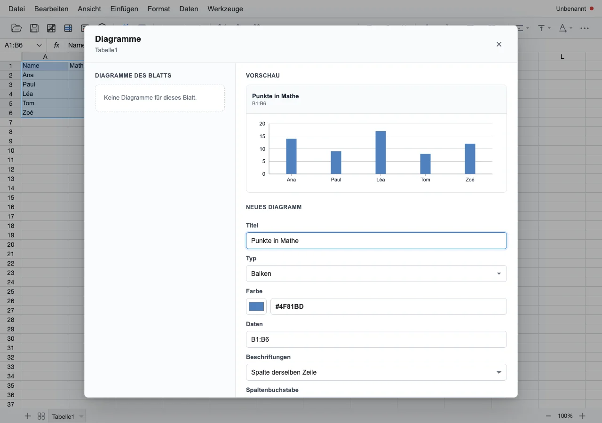
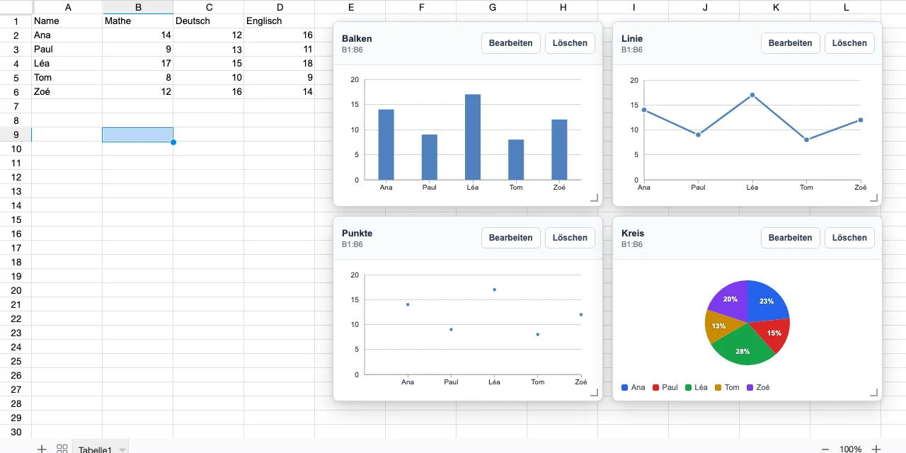
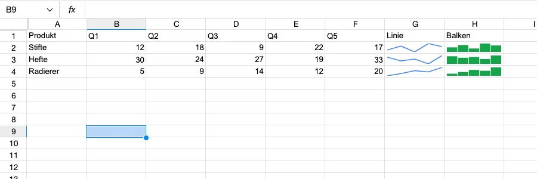

Diagramme und Sparklines
Ein Diagramm erstellen
- Die Daten auswählen.
- oder Einfügen › Diagramm einfügen.
- Typ und Optionen wählen; die Vorschau folgt.
- Hinzufügen, dann Schließen.

| Auswahl | Deutung |
|---|---|
| eine Spalte oder Zeile von Zahlen | die Daten |
| zwei Spalten | Beschriftungen in der ersten, Daten in der zweiten |
| zwei Zeilen | Beschriftungen in der ersten, Daten in der zweiten |
| zwei getrennte Spalten, mit Strg gewählt | ebenso |
Ein Diagramm zeigt eine Reihe: eine Zeile oder Spalte von Daten. Zellen ohne Zahl, etwa ein Kopf, werden übergangen.
Typen
| Typ | Für | Beschriftungen |
|---|---|---|
| Balken | Vergleiche | unter den Balken |
| Linie | einen Verlauf | auf der x-Achse |
| Punkte | eine Beziehung zwischen zwei Größen | sie sind die x-Werte, wenn es Zahlen sind; sonst 1, 2, 3… |
| Kreis | Anteile; positive Werte | in der Legende oder auf den Sektoren |
Bis zu 120 Werte, 24 für Sektoren.

Optionen
| Feld | Inhalt |
|---|---|
| Titel | Pflicht; oben im Diagramm angezeigt |
| Farbe | Auswahl oder Code #4F81BD; Sektoren haben eigene Farben |
| Daten | der Bereich: B2:B6 |
| Beschriftungen | Keine; Spalte derselben Zeile (A); Zeile derselben Spalten (1); Benutzerdefinierter Bereich, ebenso groß wie die Daten |
| Anzeige | Werte, Legende, x-Achse, y-Achse, Gitter |
Verschieben, bearbeiten
- Das Titelband ziehen verschiebt das Diagramm; seine untere rechte Ecke ziehen ändert die Größe.
- Bearbeiten öffnet das Fenster wieder, Löschen löscht es. Das Fenster listet auch alle Diagramme des Blatts auf.
- Das Diagramm folgt den Daten seiner Zellen.
Diagramme werden in der Excel-Datei als echte Diagramme gespeichert und von DocCells wieder gelesen. Sie werden nicht mit dem Blatt gedruckt.
Sparklines
Die Funktion SPARKLINE zeichnet ein Miniaturdiagramm in der Zelle.
=SPARKLINE(B2:F2)
=SPARKLINE(B2:F2; {"charttype"\"column"})
=SPARKLINE(B2:F2; {"charttype"\"line"; "color"\"#dc2626"; "linewidth"\2})
=SPARKLINE(B2:F2; {"charttype"\"bar"; "max"\100})
Die Optionen stehen in geschweiften Klammern: der Name, ein umgekehrter Schrägstrich, der Wert; ein Semikolon zwischen zwei Optionen.
charttype | Zeichnung | Eigene Optionen |
|---|---|---|
"line" (Standard) | Linie | color, linewidth, xmin, xmax, ymin, ymax |
"bar" | gestapelte Balken | max, color1, color2 |
"column" | Säulen | color, negcolor, lowcolor, highcolor, firstcolor, lastcolor, axis, axiscolor, ymin, ymax |
"winloss" | Gewinn und Verlust | dieselben, ohne ymin und ymax |
Gemeinsame Optionen: empty ("zero" oder "ignore"), nan ("convert" oder "ignore"), rtl (von rechts nach links). Die SPARKLINE-Dokumentation gibt alle Werte mit Beispielen.
Für eine größere Zeichnung Zeile und Spalte vergrößern oder Zellen verbinden.